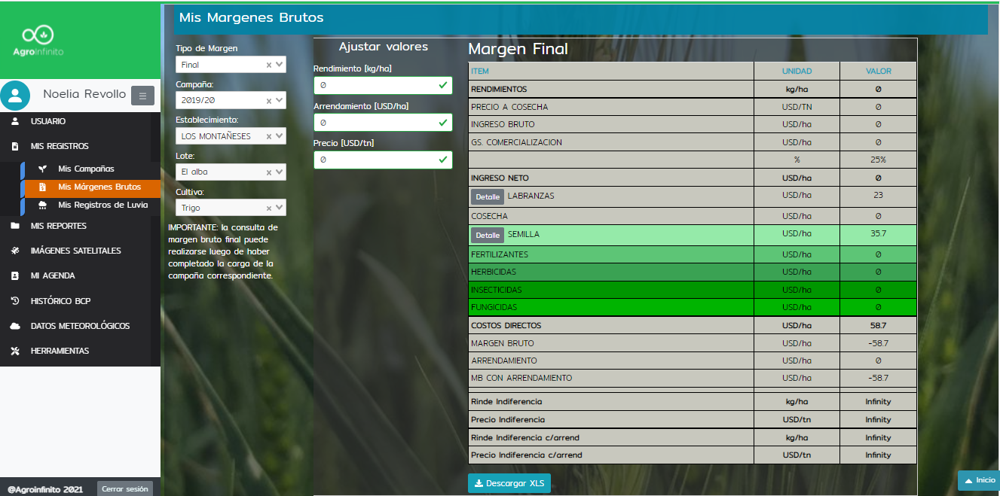

Cloud-based platform for crop produce management

As a third sector organization, the Chamber of Crop Producers of Bahía Blanca assists their affiliates in the provision of the most complete and comprehensive information service for the entire agricultural production chain in the five more economically significant types of crops in the region (wheat, barley, soybeans, sunflower, and corn). For this, the Agroinfinity platform ( http://agroinfinito.com.ar/) automates the most relevant processes (loading satellite images, meteorology, information processing, analysis of series of time, etc.) together with outstanding information collected right by the producers, users and other actors. The fusion of the different sources of information together with its interpretation by expert agronomists and producers makes it possible to design an integrated information management and analysis system in extensive areas. AgroInfinito represents a strategic development that goes beyond the purely technological aspects. It is an open innovation tool, promoting the creation of value aiming at the digital transformation of the agricultural production system (https://agroinfinito.com.ar/).
Argentina has had a worldwide privileged position as one of the biggest grain and oil seed producers. The agricultural sector plays a key role in the country's economy and requires the generation of more strategic agro-productive information. The Ministry of Agriculture, Livestock, and Fisheries is the main entity collecting and reporting productive data in Argentina. However, these reports are not equally carried out in peripheral areas. Our country has the potential to have large-scale agricultural production and develop a powerful agro-business in order to create a new economic growth engine. The constant sector growth thanks to agrotechnology (Agtech) is changing the traditional methodology of generating agricultural information.
For this reason, in the southwest of Buenos Aires (SOB) and the Port of Bahia Blanca's area, the development of a computerized geotechnological platform is introduced. AgroInfinito integrates and analyzes data from different sources, and provides a comprehensive information service for the entire agricultural production chain in the five more economically significant types of crops in the region (wheat, barley, soybeans, sunflower, and corn). The platform automates the most relevant processes (loading satellite images of the constellations involved, meteorology, information processing, analysis of series of time, etc.) together with outstanding information collected right by the producers, users and other actors through a specifically developed app. It also incorporates field information periodically obtained by expert agronomists who are part of the work team. The fusion of the different sources of information together with its interpretation by expert agronomists and producers makes it possible to design an integrated information management and analysis system in extensive areas. AgroInfinito represents a strategic development that goes beyond the purely technological aspects. It is an open innovation tool, promoting the creation of value aiming at the digital transformation of the agricultural production system.